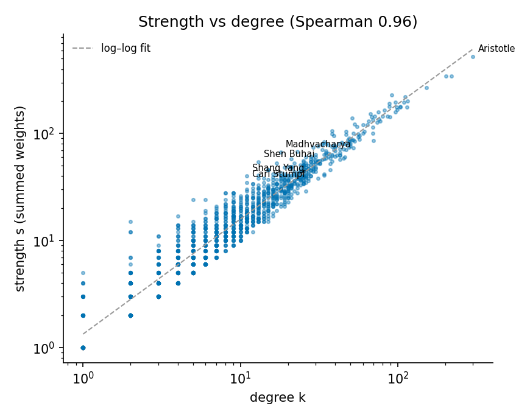
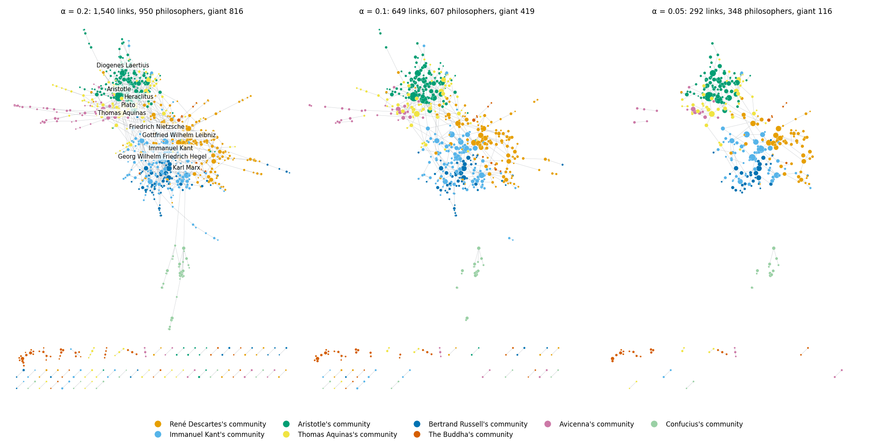
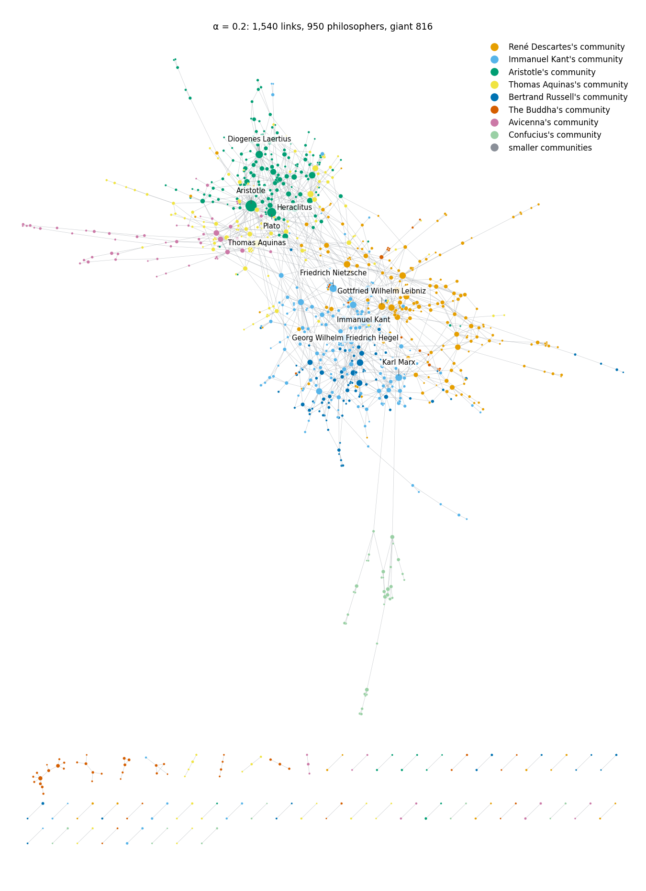

Solid cores, moving borders
A community boundary is a decision, not a fact. Pick an algorithm, a seed, a resolution, a k, an α, and a border appears between two philosophers. This post changes each of those decisions in turn on the Wikipedia philosophers network and asks which borders survive every one of them, which ones move, and who lives on them.
What we asked
What we did
What we found
What surprised us
Run Louvain once, and philosophy sorts itself. Run it again.
Modularity, compared to what?
Hover or focus a dot to read its value.
Why the degree-preserving null?
Modularity already subtracts what the degrees predict, but an optimiser that searches an astronomically large space of partitions will always find some border that looks better than chance. The question is whether our network does better than a network with the same degree sequence and nothing else. A G(n, m) graph also scrambles the degrees, so it answers a question nobody asked: it can't separate "the hubs make it look grouped" from "it is grouped."
Why isn't a random network's Q zero?
Ten seeds, one landscape full of near-ties
A consensus, and who lives on the borders
Louvain vs Infomap: where do they draw different borders?
The disagreement, as one figure
Hover, focus or tap a cell to see who is in it.
Why they disagree, in network terms
Which tradition is Aristotle really in?
Hover or tap a spoke to see the link.
k-clique communities: the k is a choice
A handful of others
Bridges vs hubs: communities per link
Drag α and watch the giant component come apart

The disparity filter, from the formula
The α sweep
Hover or tap the chart, or use the backbone explorer below, to read values at a given α.
Backbone explorer


Does the weighted network tell a different story?
Where does your philosopher land?
Type a name to see every border this post drew around them: their community in each of the ten Louvain runs, the consensus, Infomap, the link and k-clique communities they belong to, and their strongest ties.
What an LLM got wrong about the communities of philosophy
Limits, and the bottom line
Sanity checks: our numbers vs the course page
Validation of our own code
Full exercise: exercise 4.13 on the course page. We built on the course's explorables for Louvain, k-cliques, link communities and the backbone, and on the Goodies boxes on Infomap, the resolution limit and the adaptive cut.